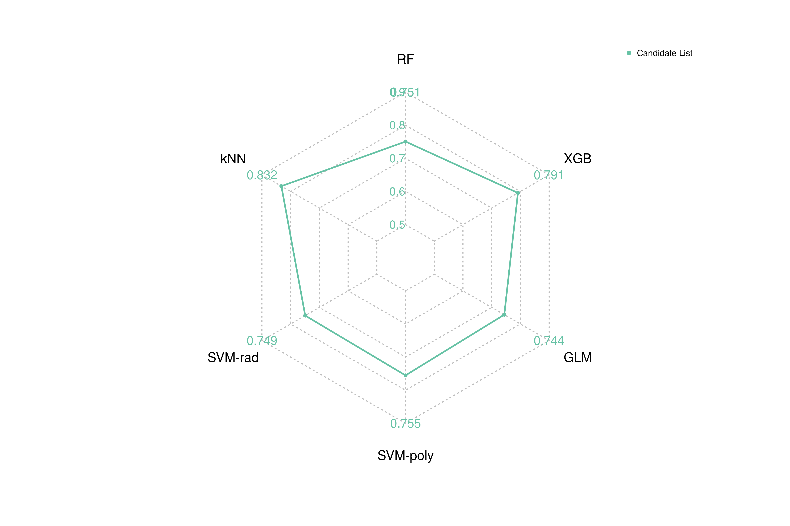
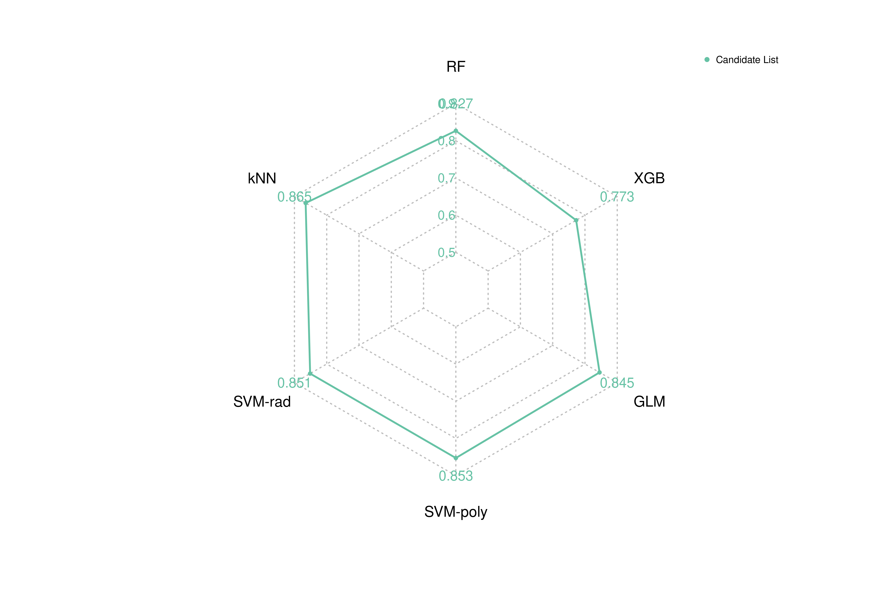

Step 02: Classification Performance on candidate genes
candidate_genes_performance.Rmd
library(EBEx)
#> Warning: replacing previous import 'proxy::dist' by 'stats::dist' when loading
#> 'EBEx'Introduction
Once we have our list of genes ready, we can proceed with the training and explainability scores extraction of different classifiers. Here, we will show an example of how to use the ML models for training and evaluating on the final candidate genes list. First, we will define some global variables and relative paths:
# Parameters
target_var <- "dis_condition"
# Relative paths
base_dir <- "test"
raw_dir <- file.path(base_dir, "raw_data")
feature_selection_dir <- file.path(base_dir, "feature_selection")
genes <- "candidate"
ml_models_dir <- paste0("test/results_", genes)
ml_models_to_run_vector <- c("rf", "knn", "svm_r", "svm_p", "glm", "xgb")The ML models function uses a gene list and the expression data. You can load these directly or obtain it by using the functions of the “Step 01: Feature Selection” vignette:
# Load gene list (already pre-computed)
gene_list <- load_gene_list(genes_list = genes,
base_path = feature_selection_dir)
# Extract train and test sets (using function)
split_data <- obtain_split_data(directory_to_load = raw_dir,
file_name = "expression",
target_var = target_var,
directory_to_save = NULL)
expression_train <- split_data$train
expression_test <- split_data$testRead 172 items
[2026-03-04 14:21:36] : Class imbalance: train set
[2026-03-04 14:21:36] : COPD: 67.111, CTRL: 32.889
[2026-03-04 14:21:36] : Class imbalance: test set
[2026-03-04 14:21:36] : COPD: 67.105, CTRL: 32.895 Cross-validation training
print_message("Running ML models on candidate gene list...")
results <- ML_models(
data = expression_train,
target_var = target_var,
models_to_run = ml_models_to_run_vector,
directory_to_save = ml_models_dir
)
print_message("Extracting model results...")
models_results <- extract_models_results(
models_to_run = ml_models_to_run_vector,
results_models = results,
expression_train = expression_train,
expression_test = expression_test,
target_var = target_var
)[2026-02-20 16:12:14] : Running ML models on candidate gene list...
...
Saving multiple .Rda objects to test/results_candidate/ML_models/rf_model.Rda ...RF done
Saving multiple .Rda objects to test/results_candidate/ML_models/svm_r_model.Rda ...SVM-rad done
Saving multiple .Rda objects to test/results_candidate/ML_models/svm_p_model.Rda ...SVM-poly done
Saving multiple .Rda objects to test/results_candidate/ML_models/glm_model.Rda ...GLM done
Saving multiple .Rda objects to test/results_candidate/ML_models/knn_model.Rda ...kNN done
Saving multiple .Rda objects to test/results_candidate/ML_models/xgb_model.Rda ...XGB done
[2026-02-20 19:36:38] : Extracting model results... Plotting results
Now that we have our different ML models trained, we can plot the results:
# results <- readRDS("/home/iria/bsc008817/COPD/EBEx/test/results_candidate/models_results.rds")
# Prepare data and plot
print_message("Processing results for plotting...")
models_results_cv_df <- process_cross_validation_metrics(
results_models = models_results,
classifiers = ml_models_to_run_vector
)
models_results_test_df <- process_test_metrics(
results_models = models_results,
classifiers = ml_models_to_run_vector
)
models_results_cv_df$classifier <- rename_classifier(models_results_cv_df$classifier)
models_results_cv_df$input_list <- rep("Candidate List", nrow(models_results_cv_df))
models_results_test_df$classifier <- rename_classifier(models_results_test_df$classifier)
models_results_test_df$input_list <- rep("Candidate List", nrow(models_results_test_df))
data_test <- prepare_data_for_radarchart(models_results_test_df, metric, "estimate", minmax[1], minmax[2])
data_cv <- prepare_data_for_radarchart(models_results_cv_df, metric, "mean", minmax[1], minmax[2])
# Parameters
minmax <- c(0.5,0.9,0.1)
metric <- "normMCC"
# Plotting (output_dir = NULL for showing plots here)
plot_radarchart(data_cv, metric, "cv", output_dir = NULL, minmax[1], minmax[2], minmax[3])
plot_radarchart(data_test, metric, "test", output_dir = NULL, minmax[1], minmax[2], minmax[3])

Performance Radar Charts: Test (left) and CV (right)